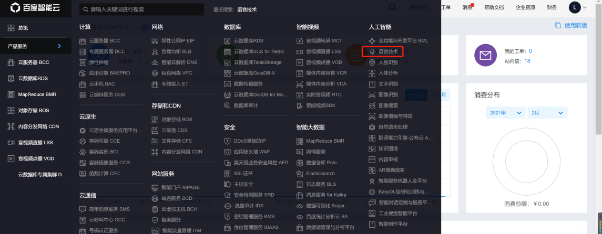
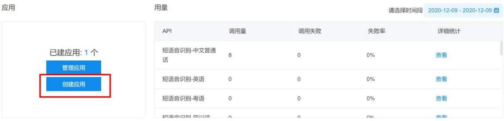
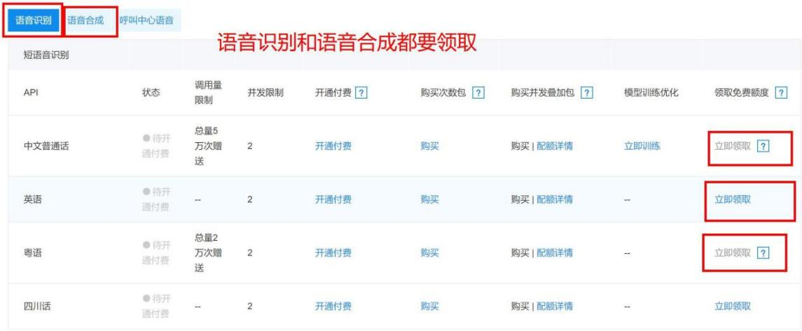
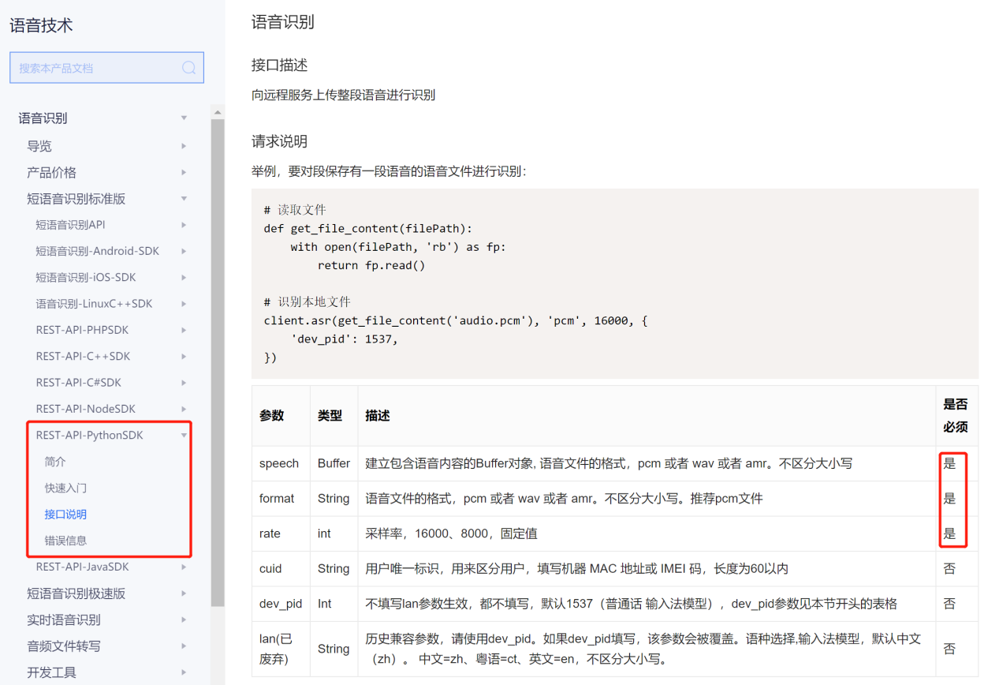
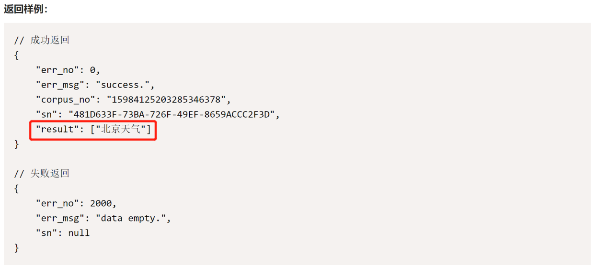
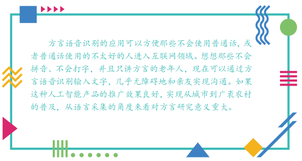
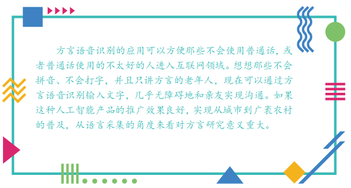

任务二 语音转文字
【任务描述】
语音识别技术需要强大的算力支撑，所以很难离线部署到本地进行应用开发，但是科大讯飞、百度等企业的开放平台提供了API免费供开发者使用。本任务用Python语言调用百度API将语音文件转换成中文。
【任务实施】
步骤1 进入百度 AI 官网cloud.baidu.com.，注册账号和语音识别服务，创建语音识别应用。
- 进入右上角进行注册。
着打开左侧产品服务，选择“人工智能-语音技术”，进入页面选择创建应用。  
获取应用的 ID 和 Key，调用API的时候需要用到。
领取语音识别和语音合成的免费额度。 
步骤2 安装python依赖包
任务1已经安装过wave和pyaudion库了，在这个任务我们就可以直接引用，但还需要安装baiduaip和SpeechReconition包。
pip install baidu-aip
pip install SpeechRecognition
步骤3 学习百度的官方文档，根据官方文档简介和接口说明编写代码。
- 利用步骤1中申请的APP_ID、APP_KEY和SECRET_KEY新建AipSpeech对象。

- 读取保存的语音文件并调用asr函数实现将语音文件转换为中文。
asr函数中包括6个参数，前3个是必须要填写的，后3个选填。参考官方文档信息，第1个参数是本地读取的语音文件（格式可以是pcm、wav、amr中的一种），第2个参数第一个参数中的语音文件格式（字符串格式）、第3个参数是语音文件采样率（只能是16000或8000，知道为什么我们在任务1中采集声音用16000的采样率了吗？）。除了这3个必须要填的参数，一般我们要转换成简体中文还需要添加dev_pid参数，参考示例添加方式为{ 'dev_pid': 1537,}。

- 编写代码，将任务1的录音功能封装到rec（）函数，导入步骤2安装的库，创建AipSpeech对象（client），调用方法asr方法，将录音转换成文本存储到result。
from aip import AipSpeech
import speech_recognition as sr
from playsound import playsound
import time
time = time.perf_counter
# 填写自己申请的语音识别应用ID、KEY
APP_ID = '******'
API_KEY = '******'
SECRET_KEY = '******'
file_Path = 'recording.wav'
client = AipSpeech(APP_ID,API_KEY,SECRET_KEY) #新建一个AipSpeech对象
# 录音
def rec():
rec_audio = sr.Recognizer()
with sr.Microphone(sample_rate=16000) as source:
print('开始录音')
audio = rec_audio.record(source,duration=10)
with open(file_Path,'wb') as fw:
fw.write(audio.get_wav_data())
print('结束录音')
# 读取文件
def get_file_content(file_Path):
with open(file_Path,'rb') as f:
return f.read()
rec() #开始录音
# 识别本地语音文件
result = client.asr(get_file_content(file_Path),'wav',16000,{'dev_pid':1537})
步骤4 从result中提取转换后的文本并输出到屏幕。
返回样例的信息是数据字典类型，其中key为“result”中存储了语音转换后的文本内容，其中“result”的数据类型是列表，所以result[‘result’][0]就是我们语音对应的文本内容。

print(result['result'][0])
步骤5 在输出后文本后，播放录音进行校对。
支持python3的playsound模块可以很方便的播放wav、mp3等格式的音频文件，安装和import playsound模块后，利用playsound函数就可以了。
playsound(file_Path)
完成以上步骤后，电脑就可以实现让输入声音，输出你说话的内容文本和录音了，完整代码如下。
from aip import AIPSpeech
import speech_recognition as sr
from playsound import playsound
import time
time = time.perf_counter
# 填写自己申请的语音识别应用ID、KEY
APP_ID = '******'
API_KEY = '******'
SECRET_KEY = '******'
file_Path = 'recording.wav'
client = AipSpeech(APP_ID,API_KEY,SECRET_KEY) #新建一个AipSpeech对象
# 录音
def rec():
rec_audio = sr.Recognizer()
with sr.Microphone(sample_rate=16000) as source:
print('开始录音')
audio = rec_audio.record(source,duration=10)
with open(file_Path.'wb') as fw:
fw.write(audio.get_wav_data())
print('结束录音')
# 读取文件
def get_file_content(file_Path):
with open(file_Path,'rb') as f:
return f.read()
rec() #开始录音
# 识别本地语音文件
result = client.asr(get_file_content(file_Path),'wav',16000,{'dev_pid':1537})
print(result['result'][0])
playsound(file_Path)
本任务实战代码如下,位于/xm1/rw2.ipynb 同学们来运行一下吧
【任务拓展】
任务2中我们完成了普通话的文本转换功能。那么英语、四川话、粤语是否可以转换呢？我们一起来查看百度语音识别技术中的接口说明里面的dev_pid参数说明。1537对应普通话，1637对应粤语，还可以对远场录音进行普通话文本转换。
 
